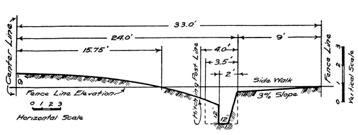
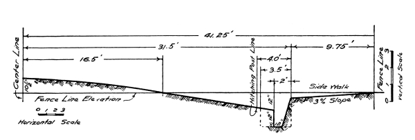
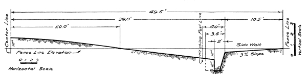

UNIVERSITY OF UTAH
“The Head of the Public School System of the State.”
The University of Utah includes the School of Arts and Sciences, the State Normal School, the State School of Mines, and a School of Medicine.
School of Arts and Sciences.
The School of Arts and Sciences offers courses in:
State Normal School.
The Normal School offers:
State School of Mines.
The State School of Mines offers Courses in:
“STUDY MINING IN A MINING COUNTRY.”
School of Medicine.
The School of Medicine offers:
1. Arts—Medical Course (four years).
The proximity of great mines, reduction works of various kinds, and power houses for the generation of electricity afford excellent advantages for thorough and practical work in all the engineering courses. The shops and the various laboratories are thoroughly equipped.
The library is the largest and best in the state.
The faculty includes graduates from the best universities in America and Europe.
The Catalogue, which gives full information concerning courses, etc., will be sent free upon request.
[Pg 1]
BULLETIN No. 3
UTAH ENGINEERING EXPERIMENT STATION
JANUARY, 1910
BY
RICHARD R. LYMAN
PROFESSOR OF CIVIL
ENGINEERING
STATE SCHOOL OF MINES
UNIVERSITY OF UTAH
SALT LAKE CITY, UTAH
[Pg 2]
The Utah Engineering Experiment Station was established by an Act of the State Legislature in March 1909, as a department of the State School of Mines, the engineering college of the University of Utah. The station is authorized “to carry on experiments and investigation, pertaining to any and all questions and problems that admit of laboratory methods of study, and a solution of which would tend to benefit the industrial interests of the State, or would be for the public good.”
Just now in the State of Utah the problem of good roads—how to construct and maintain them—is prominent in the public mind. As a contribution to the discussion of this problem Professor Richard R. Lyman of the Engineering Experiment Station staff offers the subject matter of this bulletin. The publication and distribution of such an article is clearly within the province of the privileges of the station. It is hoped that this contribution will help solve the problem of good roads in Utah.
Bulletin No. 1, now out of print, was on “Tests on Utah Brick,” and No. 2 was on “Tests of Macadam Rock.” The next bulletin to be published will be tests on the cements on the Utah Market. So long as they last bulletins of this Station will be sent free, upon application.
[Pg 3]
| UTAH ENGINEERING EXPERIMENT STATION | |
| State School of Mines, University of Utah | |
| BULLETIN NO. 3 | JANUARY, 1910 |
By Richard R. Lyman
Prof. of Civil Engineering, University of Utah,
and Vice-Chairman State Road Commission
Great institutions, great movements, and great advances in science grow, they do not spring into existence instantly. So it will be with the installation of good roads—the system must grow. No legislation can be enacted that will bring into existence suddenly a fine system of well made and well maintained highways. The beginning must be at the bottom where even the best legislation can give no more than a good beginning and then, by the vigorous application of work and wisdom, a system of roads may be constructed that will be not only the pride of the citizens of the state, but a source of education, prosperity, and pleasure. Education, because good roads will make it easy for boys and girls to get to the grade schools, and young men and young women to the high schools at all seasons of the year; prosperity, because farm products can be put in the market when the price is highest, and teams can be used profitably at other work when they cannot be used on the farm; pleasure, because of the comfort with which, at all times, those in the country can travel, thus making it possible to have and enjoy the many social advantages offered in the club, the church, and the neighbor’s home.
When, by enacting into law the best road legislation it can, the legislature has made a beginning, it is then the duty of the people to begin to learn more concerning roads and their maintenance. It may be well, in the imagination, to picture hard roads leading everywhere, but, advocating their construction at once and working ever so vigorously to this end, will probably delay rather than advance this work, for the reason that the cost of their maintenance is such that, if these roads were already constructed, it would be impossible in this state at present to keep them in good condition. It will take years of education to teach the people to place that value upon good roads that will induce them to spend, both in the construction and maintenance of highways, even a small fraction of the sum it would require to keep in repair an extensive system of hard roads in Utah. Farmers see at once when their actual cost is presented, that to make such outlays is, for them, utterly and absolutely impossible.
First in the natural development of a system of highways comes the earth road, and since a good road of this character is the very best foundation for all kinds of better highways, it may be considered, not only as a road complete in and of itself, but also as an important part of every good road. When the people throughout the state have been so taught and trained in road construction that they can and do actually construct and maintain earth roads in good condition, the foundation [Pg 4] will then be laid for some, or in fact for any better road, and the time will have arrived in which the construction of roads with hard surfaces of some sort can be taken up appropriately and perhaps effectively.
The discussion on roads, road construction, and road maintenance of the past few years has pretty well demonstrated that people generally are of the opinion that the roads should be improved and that with the general improvement of the roads will come a corresponding improvement in the prosperity and general uplifting of the people in the country districts; yet, while the opinion is general that roads should be improved, there is a vast difference of opinion as to what is the best method to follow to reach the desired end.
Men with money and automobiles are vigorously urging that road-building materials everywhere be tested, that road graders, stone crushers, and other expensive road-building machinery be purchased, and that the preparation for commencing road construction be begun at once. In short, they are conducting a vigorous campaign in the interest of hard roads—and in so doing, they may defeat their own cause now as they have done in the past. “When the hard road enthusiast began to tell the farmer how much it cost him to haul his produce to market,” says Professor Baker, “and how much he could save by the construction of hard roads, he knew instinctively that the conclusions were ridiculous, and the continual harping upon these false statistics and absurd estimates led him to believe that an attempt was being made to force hard roads upon him, whether or no, and his attitude changed from one of indifference to one of open hostility to all road improvement.”[1]
What, then, should be the line of procedure? “Unless a community is willing and able to maintain the earth roads in a reasonably good condition,” says Professor Baker again, “it is useless to expect that it will be willing or able to support a high class wagon road; and therefore, the dissemination of correct information concerning the construction and care of earth roads is politically, economically, and physically the first step towards a better form of construction.”[2]
An earth road to be a good road must be “dry, smooth, and hard.” These three conditions could be maintained with comparative ease if the earth road could be protected from water, which is its greatest destroyer and one of the most important factors in the destruction or deterioration of all roads.
Since in Utah the rainfall is very small, compared with that in the Eastern states and in the states of the Mississippi valley, the road problem is a much simpler one here than there.
If not actually the most important, certainly the drainage of a road is one of the most important factors to be considered in the construction or in the maintenance of that road.
A system of underdrainage is a necessity, where the surface water comes near the top of the ground on which a road is to be built, and drain tile laid longitudinally on boards to a carefully and properly made grade will carry such water away. Fortunately however, for the builders of roads in Utah there are comparatively few such places where roads need to be maintained in this state. Drain tile, however, laid in soft material, without the use of a board or plank to keep the ends of the individual pieces of pipe in line, is practically valueless.
It is a small amount of precipitation or rainfall only that the road builder here must take care of. Very wisely the last legislature passed [Pg 5] a law establishing standard cross-sections for the roads in this state. Figures 1, 2, 3, 4, 5 and 6 show in a clearer way what these cross-sections are, than these can be shown in the law by the use of words only.
The elevation of the crown of the road above the fence line varies from four inches to eighteen inches, the amount depending on the width of the street, and the depth of the drain ditches on the sides of the roadway is as shown some two feet below the grade of the fence line.
The roadways and sidewalks as the figures giving the cross-sections show, all have such slopes, that water falling upon these surfaces will flow quickly into the drain ditches.
Two Rod Lane
Fig. 1
Four Rod Street
Fig. 2
Five Rod Street
Fig. 3
Six Rod Street
Fig. 4
Some of our country roads in Utah have been very well constructed as far as the cross section is concerned, but no particular attention has been paid to the grade of the road in the direction of its length except when work has been done to reduce the grade on steep pitches.
Roads should have a grade or slope of about 1 to 80, or 1¼ per cent, in the direction of their length, so that water will not remain in any [Pg 6] small ruts that may be formed, but will flow along them to a point where it will flow from the rut into the drain ditch.
The slope of the drain ditches should be the same as the slope of the road and their cross-sections should be practically the same at all points, so that all the water flowing into them will flow promptly to a nearby cross drain that will carry it entirely away from the road.
Seven Rod Street
Fig. 5
In many cases unsightly, uneven holes are dug on either side of the roadway in order to secure material for making the crown of the road and the water, which gathers in these, keeps the foundation under the road always soft.
Eight Rod Street
Fig. 6
[Pg 7] Cross-drains should be provided at all “low places.” Culverts should be constructed under the roadway at these points to carry the water from the upper to the lower side of the road.
If storm water is carried quickly well away from a road, the condition of that road for traveling will be greatly improved. But rain and other storms do not generally put roads into their worst condition. This comes in the spring time, when the frost “comes out of the ground.” Observation shows, however, that not much frost gets into dry ground, so that if a road is properly maintained during the fall, and the fall and winter storm water is promptly drained well away from the road, frost can do the road very little damage. It cannot loosen up the earth, rendering it soft and mushy, as it does earth that is filled with moisture. To make good earth roads in the spring, therefore, requires good drainage and careful maintenance during the fall and winter.
The average country road in Utah can be constructed with its center raised six inches for from $40.00 to $50.00 per mile. To raise the crown of the road six inches more above the sides will cost about the same amount.
Even more important than a proper construction of a road is the proper maintenance of that road. There is a difference, too, between maintenance and repair. The one keeps the road in good condition always, the other puts it in good condition occasionally. “What a minute and a shovelful of earth will do as maintenance may require loads of earth and hours of time as repairs.”
The road grader with its inclined blade, its four wheels, and its comparatively complex machinery, when used for maintaining or repairing an earth road merely cuts off the high places and deposits in the low places, the earth thus cut away.
The leveler, a frame-work of planks held on edge and drawn in the direction of the length of the road with three or four of the timbers at right angles to this direction, renders good service by taking off the high places and filling up the low ones. The weight of this device and the greater width of its timbers, make it pack the earth into low places better than the road grader does. But since the blade of the grader can be set at such an angle with the direction of the road that it will constantly carry the earth from the outer edge toward the crown of the road, it makes the center of the road high, as it should, while the leveler makes it flat.
Plan of
Split-Log Road Drag
Fig. 7
The triangular shaped drag has, to a certain degree, the good qualities of both the devices just named, but what is generally regarded as the best device for repairing and maintaining earth roads is the King road drag or the split-log drag.
A split-log drag actually constructed of a log split in two is shown in [Pg 8] Fig. 8; while this same device, constructed of planks, is shown in Fig. 9.
Split-Log Road Drag
Fig. 8
Practically all the good qualities of all the other devices used up to this time for maintaining earth roads are found in the split-log drag.
Fig. 7 shows the drag with the doubletree attached, and therefore it shows the position of the team drawing the drag with respect to the drag itself. The diagonal brace between the two heavy timbers near the forward end is used to keep the end of the timber which travels ahead from vibrating. The chain by which this device is drawn may be attached directly to the front timber or it may be extended through holes in this timber and be attached to the timber in the rear. If, instead of passing through the hole A (Fig. 9.) the chain is carried over this timber and attached to the timber B, more room will thus be made for earth in front of the drag to slide under the chain.
Plank Road Drag
Fig. 9
The angle the sides of the drag make with the direction of the road can be varied at pleasure by attaching the doubletree to different links of the chain.
The teamster will soon learn by experience that changing his position as he rides on the drag will affect the work of the drag very materially, and he will soon learn also how and when to change his position in order to obtain the best results.
The proper and best use of this drag or the careful maintenance of the ordinary earth road is perhaps the most important lesson in “roads” Utah people have to learn at this time. It is more important than the actual grading or construction of these roads.
This drag should be used upon the road after every heavy rain and after [Pg 9] every big thaw as faithfully as the successful dry-farmer harrows his crop at these same times.
Fortunately, too, the road dries faster than the farming land, so that the work on the roads can be completed before teams can, to advantage, be taken upon the farms to work.
Professor Ira. O. Baker of the University of Illinois, in an excellent article on the maintenance of roads in the Transactions of the American Society of Civil Engineers, Vol. LXI., gives a description and also drawings of the split-log drag. His drawings are reproduced in Figs. 7, 8, and 9. He describes the drag as follows:
“Farmers in different parts of the country for many years, have used various devices occasionally in smoothing the surface of the earth roads; but of all these, none seems to have devised a better form of machine or been more persistent and intelligent in its use than Mr. D. Ward King, of Maitland, Mo. Mr. King devised what he calls the split-log drag. A plan of the split-log drag as shown in Fig. 7, and Fig. 8 is a perspective view. The drag may be made from a log ten or twelve inches in diameter and from seven to nine feet long. A light wood, like elm, is preferable to a heavy one, like oak. The cross braces may be round or square sticks from three to four inches in diameter, the ends fitting into two-inch auger holes. A board, not shown in the cut, is laid upon the cross-pieces for the driver to stand upon. The drag may also be made of two pieces of plank, ten or twelve inches wide and from seven to nine feet long. The plank drag is shown in Fig. 9. It is wise to reinforce the wide planks with either a 1 by 6-in. or a 2 by 6-in. strip as shown in Fig. 9.
The drag is drawn by two horses, and its length should be proportional to the weight of the horses. A drag seven feet long is about right for a team of 1200-lb. horses, and one nine feet long for two 1600-lb. horses. The driver rides upon the drag, and varies its effect by his position upon it. The drag does the best work when the soil is moist, but not sticky. If the roadway is badly rutted and full of holes, it is well to drag it when the surface is slushy.”
Mr. King, the government expert on the split-log drag, says:[3] “Two mistakes are commonly made in constructing a drag. The first lies in making it too heavy. It should be so light that one man can easily lift it. Besides, a light drag responds more readily to various methods of hitching and to the shifting of the position and weight of the operator. *** A drag can be made heavier at any time by proper weighting.
The other mistake is in the use of square timbers, instead of those with sharp edges, whereby the cutting effect of sharp edges is lost and the drag is permitted to glide over instead of to equalize the irregularities in the surface of the road. ***”
“A strip of iron about 3½ feet long, three or four inches wide and one-quarter of an inch thick may be used for the blade. This should be attached to the front slab so that it will be one-half inch below the lower edge of the slab at the ditch end, while the end of the iron toward the middle of the road should be flush with the edge of the slab. The bolts holding the blade in place should have flat heads and the holes to receive them should be counter-sunk.
If the face of the log stands plumb, it is well to wedge out the lower edge of the blade with a three-cornered strip of wood to give it a set like the bit of a plane.”
Mr. Chas. H. Hoyt of the U. S. Office of Public Roads, says,[4] “The split-log drag is a very simple affair, costs $2.00 to build, is [Pg 10] economical to use, and every farmer or teamster living along a country road, who is interested in having the road past his place kept in good condition and is also interested to keep highway taxes down, should have a split-log drag.”
To maintain in this way all the important rural roads will make it necessary to put to work many of the teams that are idle when this work should be done. Perhaps some system can be devised that will require each farmer to maintain that portion of road in his neighborhood, and for so doing he may be exempt from paying a cash road tax. Those who prefer to do so can pay the tax in money, and the funds thus derived can be used to pay for the general supervision of this maintenance-work, and for the actual work of maintenance on the roads where farmers do not care to do the work themselves.
Since the hard, dry, smooth earth road is an excellent road, and since it is possible with reasonable effort to induce the people to construct and maintain such a road from one end of this state to the other, with a good many side roads of the same sort on the way, why not strive for this possible end, instead of attempting to get a few miles of hard road constructed? Such a road could be pointed to with pride by every citizen of the state in the presence of any citizen of any other state. Would it not be better to have a well constructed and carefully maintained earth road from Logan to St. George, a distance of 350 miles, than to have the best tar macadam road for a distance of 37 miles between Ogden and Salt Lake City? The longer road would cost $25,000 with many interested and willing people to pay for it, while the other would cost thirty-seven times as much with fewer people personally interested in it. Every farmer between Logan and St. George drives upon the public highway, while many persons in the larger cities rarely, if ever, do.
An ordinary macadam road two rods wide costs about $20,000 per mile; a tar macadam road about $25,000 per mile; an asphaltum pavement some $44,000 per mile; a gravel road, covered with gravel one foot deep, costs from $1,600 to $5,000 per mile, and the cost of constructing an earth road the same width varies from $40 to $100 per mile.
While the figures given are the costs of constructing various roads two rods wide, this occasion is taken to emphasize the fact that a road sixteen feet wide is broad enough in most country districts, while in sparsely settled parts even narrower roads will answer all actual needs very well.
Ordinary macadam pavement is composed of carefully selected stone and gravel thoroughly rolled into a compact mass, with the material so graded that the coarsest stones are on the bottom and the finer binding material is on the top. Such a roadway proved very satisfactory until the general advent of the automobile. In order to resist the digging or scratching effect of the driving wheels of high speed motor cars, which is technically called the shear, it is necessary to use tar or some other binding material for holding the particles of stone more firmly together.
Tar macadam roads are constructed the same as other macadam roads, except that the top layers of broken stone are covered with hot tar before they are rolled into place.
If $70 per mile be taken as the cost of constructing an earth road two rods wide, the cost of building one mile of gravel road will build some fifty miles of earth road; one mile of ordinary macadam will build 300 miles of earth road; one mile of tar macadam will build 360 miles of earth road; and one mile of asphalt pavement will construct 600 miles of earth road. [Pg 11]
An important argument in favor of the earth road is the fact that when it is laid out and constructed, it is the beginning of a first-class gravel road, a first-class macadam road, or a first-class tar macadam road, so that by getting the earth road made, the individual interested primarily in the construction of hard roads has succeeded in getting the hard road well begun.
While nearly everywhere in Utah the soil is such that it will make a good earth road, there are parts in which the soft clay is filled with alkali, and there are other parts where there are extensive stretches of sand. Neither of these alone can be made into an earth road that will be a good, passable road all the year round. The sand road is best in wet weather, while the alkali road is best in dry weather. If, however, the soft clay and the sand are so mixed on the road that the clay just fills the openings or interstices between the grains of sand, and yet this quantity is not so large as to keep the grains of sand from touching or coming in contact with one another, the road, if properly and constantly maintained, will be a good one.
Since proper maintenance is an important part of the work on ordinary roads, its cost will be considered briefly.
The repairs and maintenance on an asphalt pavement cost from 9 to 60 cents per square yard annually, or for a two rod road the cost is from $1,750 to $11,600 per mile per year; on a tar macadam road the cost is from $2,000 to $4,000 per mile per year; on a gravel road it is about $40 per mile per annum, while for $5 per mile per year an earth road can be kept in a condition of repair that will surprise those who have not used the split-log drag on such a road.
As already stated, narrower roads will answer all necessary demands in many parts, and maintaining such will reduce the cost proportionately. A well kept narrow road is infinitely better than a broad one in bad condition.
Concerning the maintenance and the construction of roads, Mr. Charles H. Hoyt of the United States Office of Public Roads, writes:[5] “It is sad when we have to say that because of neglect the roads that have already been built have been allowed to go to pieces and have not been properly maintained. Even our ordinary dirt roads are horrible examples of this statement.”
On the value to a community of good roads, Mr. Hoyt says, in the same article: “Any country which longer continues to insist upon remaining stagnant concerning highways, will soon be classed behind the times and avoided by progressive citizens.”
Mr. D. Howard King, Expert on Split-log Drag, Office of Public Roads, has prepared a bulletin called Farmers' Bulletin, No. 321, on “The Use of the Split-Log Drag on Earth Roads.” All who are interested in this subject should secure a copy of this excellent paper from the United States Department of Agriculture, Washington, D. C., and make a careful study of the same.
On the use of this drag the bulletin says, in part: “Clay, when mixed with water and thoroughly worked, becomes remarkably tough and impervious to water. If compacted in this condition it becomes extremely hard. Another valuable result of dragging is the reduction of dust, for the particles of clay adhere so tenaciously that there is but little wear when the surface is smooth. Dust on an earth road is due to the breaking up under traffic of the frayed and upturned edges of ruts and hoof prints. If the surface is smoothed after each rain and the road dries hard and even, no edges are exposed to crushing, and the only dust which forms is that due to actual wear of the road surface.” [Pg 12]
The bulletin quotes Mr. F. P. Sanborne[6] as follows: “The least expense per mile (for dragging) was about $1.50; the greatest, a little over $6; the average expense per mile for five and one-half miles, a little less than $3.” Continuing, Mr. Sanborne says: “The writer has lived by this piece of road all his life, and although we have had the extremes of weather this season, both wet and dry, not for forty years has the road in question been so free from mud and dust. Parties who have known the road all their lives are agreed that it never was in so good a condition a season through.”
“The total expense for twelve months on twenty-eight miles of road in Iowa,” continues Mr. Hoyt, “averaged $2.40 per mile, and the roads were reported to have been 'like a race track' the larger portion of the year.
A number of farmers in Ray county, Missouri, employed one of their number to drag a five-mile stretch. He received compensation at the rate of $3 per day. When the end of the year came and a settlement was made, the cost for the year was found to be $1.66 per mile. The road is a tough clay, and my informant declares it was always much better than the other roads in the neighborhood.
Prof. William Robertson of the Minnesota Agricultural station, after a year's experience in dragging a 'main road made entirely of gumbo, without any sand or gravel, and which during the past year has shown no defects either by rutting or development of soft places,' fixes the cost of the work at not to exceed $5 per mile.”
Since in Maine, Iowa, Missouri and Minnesota, the four states just referred to, there is a comparatively great annual rainfall, while in Utah the rainfall is comparatively small, the cost of maintaining the earth road in Utah will be correspondingly less and the results will be proportionately greater.
If the state legislature, the Automobile Club of Utah, some other organization or some philanthropic individual, will offer an annual prize of $1000 to the county actually constructing and maintaining during the year the best five miles of earth road, the number of excellent roads that will be built in the next few years will be a most pleasant surprise to all who are anxious to see good roads constructed.
The better, and, in fact, the best roads will come along naturally after we have a first-class system of earth roads built and well maintained generally throughout the state. When once the efforts of all our good-roads enthusiasts are united on constructing and maintaining first-class earth roads everywhere, the road problem in Utah will be solved, and our road systems will be the pride of the whole state.
What is the State School of Mines?
The State School of Mines is the college of engineering of the University of Utah. It is an organic part of the University and enjoys all the advantages that spring from an intimate connection between a technical college and a modern university.
COURSES.
The school offers seven four-year courses leading to bachelor’s degrees, also graduate courses leading to the degree of master of science in several lines of engineering. The seven four-year courses are in MINING ENGINEERING, ELECTRICAL ENGINEERING, CIVIL ENGINEERING, MECHANICAL ENGINEERING, CHEMICAL ENGINEERING, GENERAL ENGINEERING, and IRRIGATION ENGINEERING, the first part of the course in irrigation engineering being given, however, by the Agricultural College at Logan. Graduate courses are offered in each of these lines of engineering.
FACILITIES AND EQUIPMENT.
The school is provided with a first-class equipment to do its work. The laboratories are all well furnished, in this respect ranking with the foremost colleges of the country. The teachers are all specialists and the methods of instruction modern. For mining work the location of the school is unexcelled, Salt Lake City being the center of a great mining region, which makes it easy to provide abundant and inexpensive field work.
EXPENSES.
The expenses at the school are very low, the cost of registration and tuition being from ten to twenty-five dollars per year. The school is certainly among the most inexpensive good engineering colleges in the country for a student to attend.
Catalogues and illustrated circulars are sent free upon request.
SKELTON PUBLISHING CO.
SALT LAKE CITY